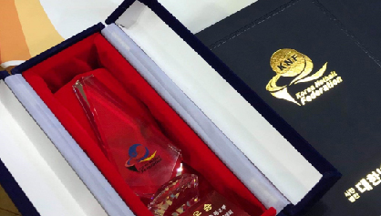
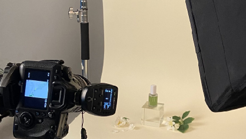
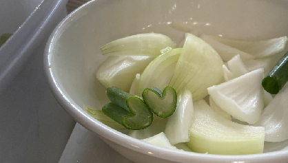

| 인상깊은 경험들 | |
|---|---|
 |
첫번째 경험은 스포츠 동아리 활동입니다. 중학생 때 저는 친구들과 구기 스포츠 동아리 활동을 진행했었는데요 친구들과 함께 대회를 준비하는 과정이 인상 깊었습니다. 비록 많이 다치고 반복되는 연습도 힘들었지만 최종적으로 대회에 나가 상위권에 이름을 올리는 순간에는 그간의 고통들이 행복으로 돌아오는 경험이었습니다. |
 |
두번째 경험은 특성화 고등학교 진학입니다. 친한 친구들은 다같이 주변 일반고에 진학하는 반면 저는 제가 하고 싶어하는 것에 대해 생각했고 미디어와 관련 된 경험을 쌓고 싶었습니다. 때문에 많이 낯선 환경이고 아는 사람 한 명 없지만 가치 있는 고등학교 생활을 보내기 위해 특성화 고등학교에 진학했습니다. 덕분에 미디어와 관련 된 여러 학습활동은 물론 개인 포트폴리오 또한 제작할 수 있었습니다. 오직 특성화 고등학교에서만 겪을 수 있는 경험이다보니 가장 인상적으로 다가온 것 같습니다. |
 |
세번째 경험은 아르바이트 경험입니다. 저는 고등학생 때 첫 아르바이트를 음식점에서 시작했습니다. 난생 처음 해보는 경험이다보니 실수도 잦고 자주 다쳐서 심적으론 힘겨웠지만 가치 있었습니다. 아르바이트에서의 실수는 추후 어떤 부분에서 조심해야하고 비슷한 상황에선 어떻게 대처할 것인지에 대해 도움을 줄 것이기 때문입니다. 그리하여 당시에는 힘듦만 가득한 경험이지만 돌이켜보니 저에게 도움을 주는 경험인 것 같아 인상적이라고 여겼습니다. |